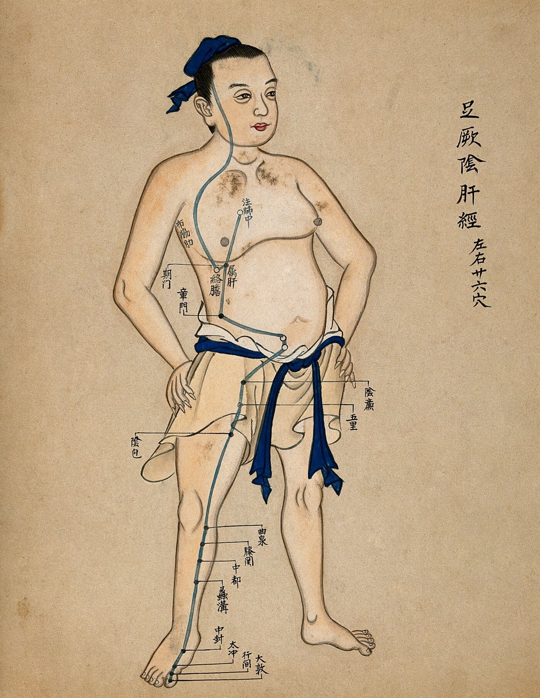
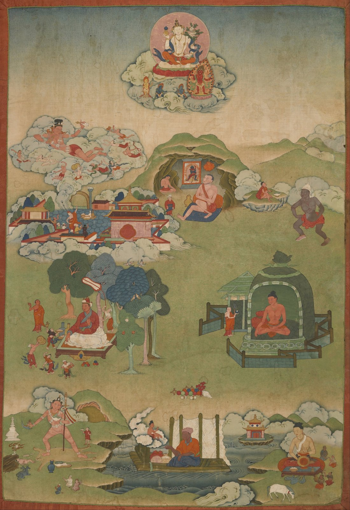
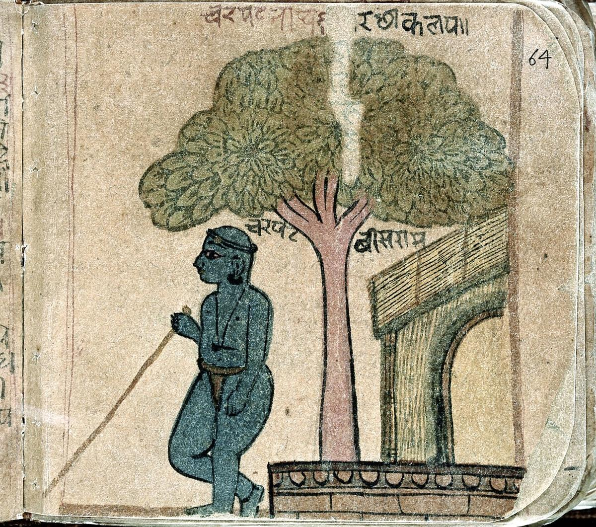
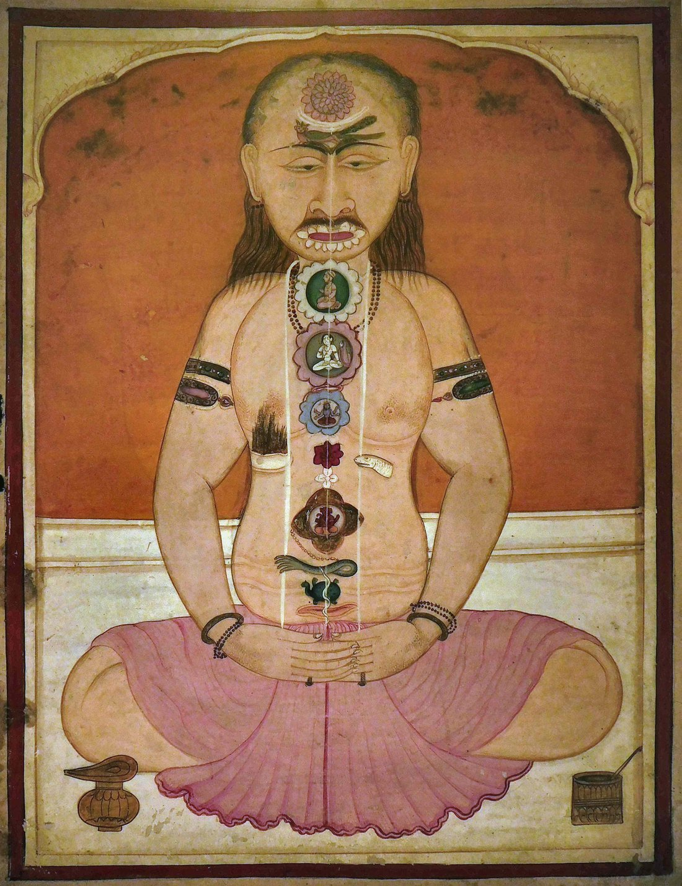
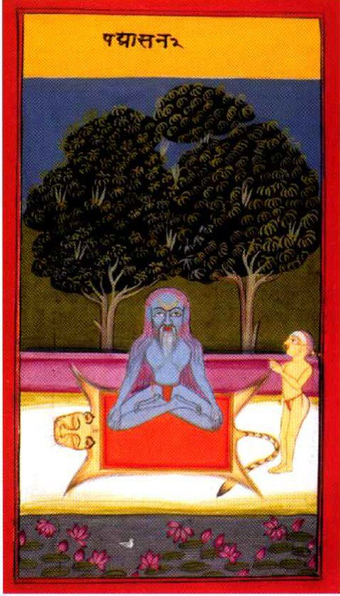
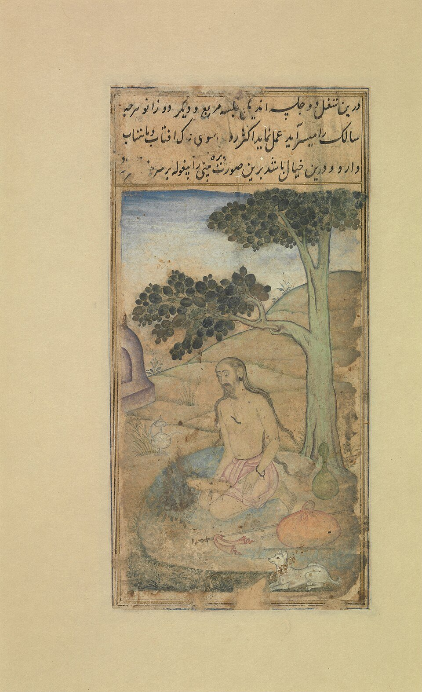

One reality, described in many languages
Eastern traditions such as yoga, Chinese medicine, tai chi and Ayurveda are thousands of years old. They were built by smart, capable people with every mental faculty we have today, who chose to focus those faculties on the body. For materialist science to discount them is a mistake.
Humanity should expect a theory that makes sense of them. If these traditions are all wrong, then generations of careful people were strangely incapable. If they are right, then modern science does not yet understand what it is doing in this area. Either way, something needs explaining.
A key goal of the Holistic Model of Reality (HMR) is to provide the language that joins East and West, scientifically and in detail, for the first time. We have searched the research extensively, and we have not found anyone else making this case as deeply or as completely. If no one has ever shown you a scientific marriage of East and West, this is it, and we ask you to give it a serious look.

The language of HMR
We do not ask anyone to believe this right away. We invite you to imagine a world in which we all agree on it. We are used to disagreement about the deepest questions; it feels like just how life is. But life would be far better if we agreed on the fundamentals and shared the values that follow from them.
HMR needs only a small set of terms. Humanity already has words for these things, but many are vague, overlapping, or tied to one tradition. The aim is to identify what is actually true and name it precisely, so that science and the traditions can be read in the same words.
Everything that can be measured: matter, energy, space and time, and the laws that govern them. What is usually just called "reality".
The non-physical intelligence from which physical reality emerges, and the process by which it does so; the two are one. UI is another name for God, or for any higher power. Defining UI →
One of humanity's names for UI, alongside Brahman, the Tao, Allah and many others. The names differ; the source is the same.
The stable rules UI holds fixed so that many separate beings can share one physical reality. Science is the study of these rules.
Any instance of UI experiencing physical reality, from a single cell or a blade of grass to a human being.
An instance of UI embedded within physical reality, able to experience it through an interface: the human body. In Hindu thought, closest to Atman.
The physical interface through which an instance of UI senses and acts in physical reality. In humans, a tensegrity held together by fascia.
The thinking that happens inside one life: memory, reasoning, choice and meaning, running on one particular brain and body. Consciousness is the awareness itself; the mind is what that awareness does with one body's information. Many minds, one consciousness.
What a person actually is. The mind is one thing and the body is another, but neither works alone. Through the fascia and the nerves woven into it, UI's awareness is joined to a body, so that every sensation reaches the mind and every intention reaches the tissue. Each of us is an isolated instance of UI that does not remember its full capabilities, but can sense and act in the world through this system.
Physical reality as a living being meets it: everything outside the skin that the mind-body system senses and acts on, from the ground under the feet to other people. The same physical laws, seen from inside a life.
Felt signals, processed by the mind-body system, that report how an experience stands: calm or threat, joy or grief, connection or loss.
Experience itself, the awareness that is aware. In HMR it is fundamental: not produced by matter, but the ground from which matter emerges. It is not the same as the mind: consciousness is the one awareness of UI; a mind is that awareness at work inside one body.
Order, harmony and integration: parts that fit together and support each other instead of pulling against each other. UI's history moves toward it, from chaos to order to a universe of stable laws. A life moves toward it too, as body, thoughts, words and actions come into line with each other and with other lives.
A transformation, not an end
UI does not wait for a life to end to learn from it. In HMR, UI experiences each life here and now, in every moment of it. Death is the point where that life's form in physical reality changes, and it is different for every life form. More below →
What HMR proposes about death
Every tradition has an account of death. These are HMR's hypotheses, stated plainly as hypotheses. None of them is a medical claim.
Different for every life
Life forms that never reach a high resonance with their purpose may, after death, largely dissolve. Others persist more. What carries on depends on how fully a life became what it was for.
Death may be overcome
Eastern traditions hold that death can be overcome through a kind of enlightenment. HMR takes that seriously across its whole range: from a death followed by an afterlife, to a life extended far beyond the usual span. Siddha traditions in India describe practitioners who sought a perfected, deathless body (White, The Alchemical Body, University of Chicago Press), and their stories tell of lives lasting several hundred years.
A perfect tensegrity might not age
A body is kept alive by moving nutrients in and waste out, and by regenerating tissue. If a perfect tensegrity distributed nutrients and removed waste optimally while its cells kept regenerating, it is hard to name what would wear it down. HMR holds that such a body could, in principle, be ageless.
The laws themselves may change
If physical reality emerges from UI, its laws are rules UI holds fixed, not limits on UI. A sufficiently mature UI might change them. In that case even the limits we treat as absolute, death among them, are not final.




Practices that work on the fascia web
Without anatomy books, contemplatives mapped the body from the inside: the bandhas, or "locks", of hatha yoga; the channels of prana called nadis; the meridians and qi of Chinese medicine; the slow, spiraling movements of tai chi and qigong; the marma points of Ayurveda.
HMR's view is that these traditions were working, with great precision, on the fascia web, the body's continuous connective tissue: holding, lengthening, hydrating and releasing fascia through breath, posture, pressure and attention. They knew what they were doing. They described it in a different language, prana and qi, that Western medicine has typically not taken seriously. That has been a mistake, and one to correct soon: these traditions hold thousands of practices that, read through fascia, are all aimed at the same goal, optimizing the human tensegrity.
Science is beginning to look in the same places
Exact words from peer-reviewed abstracts.
"We hypothesize that the network of acupuncture points and meridians can be viewed as a representation of the network formed by interstitial connective tissue."
Langevin and Yandow, 2002, Anatomical Record. doi:10.1002/ar.10185
"Connective tissue thus may function as a previously unrecognized whole body communication system."
Langevin, 2006, Medical Hypotheses. PubMed 16483726
"The reviewed evidence supports the view that the human body's fascia network may be the physical substrate represented by the meridians of TCM."
Bai et al., 2011, Evidence-Based Complementary and Alternative Medicine. doi:10.1155/2011/260510
"This paper reconsiders acupuncture, positing that the fascia is the mechanism of action of acupuncture therapy."
Finando and Finando, 2011, Journal of Bodywork and Movement Therapies. PubMed 21419357
"The proposed analogy bridges a foundational TCM theory with contemporary biomedical science."
Xia et al., 2026, Frontiers in Physiology. doi:10.3389/fphys.2026.1795656
"A tensegrity-based interpretation allows acupuncture to be studied as an architectural intervention targeting impaired plasticity rather than as a purely neuro-reflexive therapy."
Carballo, 2026, Frontiers in Physiology. doi:10.3389/fphys.2026.1779725
The field is careful: one 2026 review frames these links as analogies rather than proven equivalences (Liu et al., 2026). Who is making which part of the claim: resources →
That science is only now looking here is surprising. Almost all of this work dates from around 2000 onward, and there should be far more of it. Something this important, once humanity sees what it is, should change the course of history; we are at the edge of that, and science is behind. For anyone with children especially, no day should be lost. This is, in the end, a matter of life and death.
Searching the science turns up people on the right track who are not quite hitting the nail on the head. Each sees one piece: acupoints in connective tissue, force along fascial lines, the body as a tensegrity. It is surprising how far one has to stretch to find scientists looking at this seriously at all, given how many people already practice it.

.jpg){kind=link}


What fascia can do: properties science has measured
Fascia is not packing material. Researchers have found that the collagen it is made of generates electricity under load, is ordered like a liquid crystal, contracts on its own, and is lubricated by cells of its own. Exact words from the papers:
"single collagen fibrils behave predominantly as shear piezoelectric materials"
Minary-Jolandan and Yu, 2009, Nanotechnology. doi:10.1088/0957-4484/20/8/085706. The effect in collagen was first reported by Fukada and Yasuda in the 1950s and 1960s.
Every stretch and squeeze generates a small electrical signal, up to tens of millivolts per fibril under load. A web of it from head to toe is a body-wide sensor.
"Bound water layers on the collagen fibers provide proton conduction pathways for rapid intercommunication throughout the body"
Ho and Knight, 1998, Am J Chin Med. doi:10.1142/S0192415X98000294. A hypothesis paper; the authors propose experiments to test it.
If the whole web is one ordered, water-bound crystal, a body without adhesions would be one continuous channel of communication.
"fascia may be able to actively contract in a smooth muscle-like manner"
Schleip, Klingler and Lehmann-Horn, 2005, Med Hypotheses. doi:10.1016/j.mehy.2005.03.005. Based on contractile cells found in fascia and in vitro contraction tests.
The web sets its own tension. That makes it something the mind can learn to reach, not just a passive wrapping.
"a new class of cells in fasciae is identified, which we have termed fasciacytes, devoted to producing the hyaluronan-rich extracellular matrix"
Stecco et al., 2018, Clin Anat. doi:10.1002/ca.23072; hyaluronan content by site in Fede et al., 2018.
Fascia has its own cells for keeping its layers gliding. An adhesion is where that glide was lost; imagine every layer, head to toe, gliding freely.
Put these together: a continuous, electrically responsive, self-tensioning, self-lubricating web running through every part of the body. In HMR's view, a person whose web had no adhesions anywhere, from scalp to toes, would be something humanity has rarely, and possibly never, seen yet: a body that senses, communicates and moves as one.
Chakras, meridians and the lines of fascia
The traditions' maps of the body and modern maps of fascia are being compared. Some correspondences are measured; others are proposed but not yet tested.
Meridians follow fascial planes
Mapping the arm, researchers found an 80% correspondence between acupuncture points and planes of connective tissue between or within muscles (Langevin and Yandow, 2002). Reviews from China proposed the fascia network as the anatomical basis of acupoints and meridians and named a field, "fasciaology" (Bai et al., 2010; 2011).
Lines of fascia carry force
A systematic review of dissection studies found strong evidence for three long myofascial chains, including the superficial back line from the soles of the feet to the brow (Wilke et al., 2016), echoing the long channels mapped by yoga and Chinese medicine.
Those channels: Chinese medicine maps qi along 12 principal meridians, long lines running through the limbs and trunk, with acupuncture points along them where needles or pressure are applied; the World Health Organization's standard locates 361 of them. Yoga maps prana along channels called nadis. Meridians, explained; the WHO standard, summarized (Lim, 2010).
Trigger points and meridians
Referred-pain patterns from myofascial trigger points predicted the paths of all 12 principal meridians, especially in the limbs (Dorsher, 2009). A later review found trigger points closely match "Ashi" points in particular (Lee, Lee and Chae, 2022).
Meridians and collagen bands
Along one meridian, lower electrical impedance went with bands of collagen under the skin; two other meridians showed no difference (Ahn et al., 2010). A result worth following, not yet a rule.
Qi as fascial activity
Acupuncturists and researchers have proposed that the activity of fascia is what the classics called the qi of the channels (Finando and Finando, 2012), and that the classical "Sanjiao" passageway of qi and fluids matches the fascial-interstitial system (Xia et al., 2026).
Chakras and the body's junctions
The traditional chakras sit along the midline at places of anatomical convergence: near the major nerve plexuses, the diaphragm, the throat and the pelvic floor, where layers of fascia meet and the bandhas are applied. We found no rigorous study of this correspondence. It is one HMR aims to test.
What HMR holds to be true
Beyond what has been measured, these are HMR's own claims about the traditions' maps and methods: what HMR thinks is actually going on.
Bandhas work on fascia
The locks of yoga tension the trunk's fascial sheets and pull on the long front and back lines at once; held with the breath, they let the spine's fascia reshape. The bandhas →
Qi and prana are fascial
What Chinese medicine calls qi and yoga calls prana is the flow of tension, fluid and signal through the fascia web. The words differ; the tissue is the same.
Meridians are lines of fascia
The meridians and nadis are maps of the body's long fascial lines, drawn from the inside by people who felt them, centuries before anatomy could see them.
Chakras are fascial junctions
The chakras mark where the body's horizontal sheets of fascia cross its long vertical lines along the midline: at the pelvic floor, the diaphragm, the heart, the throat and the head.
Long holds remodel fascia
Holding a posture for minutes, as yin yoga and zhan zhuang do, gives fascia the time it needs to change, which short stretches never do. Timing →
Slow spirals free the web
Tai chi's slow spiraling movement loads the long diagonal lines of fascia evenly, untwisting the web as it moves.
Timing: why slow movement reaches fascia differently
The traditions changed the speed of the body. They held positions for minutes, moved slower than anyone moves by accident, or repeated a motion in a steady rhythm. Timing is well understood by people who study fascia: tissue responds differently to 10 seconds, 30 seconds, 90 seconds and several minutes. HMR's view is that timing is one of the main ways these practices reach the fascia.
"Over 180 seconds of stretching was required to decrease DPT and stiffness, but isometric muscle force decreased regardless of the stretching duration."
Matsuo et al., 2013, Journal of Strength and Conditioning Research. PubMed 23524367 (DPT: passive torque)


"Fibroblasts in whole areolar connective tissue respond to static stretching of the tissue by expanding and remodeling their cytoskeleton within minutes both ex vivo and in vivo."
Langevin et al., 2013, Journal of Cellular Physiology. doi:10.1002/jcp.24356
| Hold | What the studies found | Source |
|---|---|---|
| First 10 to 20 s | Most of the quick drop in tension happens here. At the ankle, tension fell about 21% within 15 s and did not fall further by 60 s. | McNair et al., 2001 |
| 30 s vs 60 s | For lasting hamstring range over six weeks, 30 s a day worked as well as 60 s, and both beat 15 s. More time or more sessions a day added nothing. | Bandy and Irion, 1994; Bandy et al., 1997 |
| 45 to 90 s | During a 90 s hold, resistance fell 33 to 38%, with no muscle activity, even in people with complete spinal cord injury: the tissue itself relaxes (viscoelastic stress relaxation). The drop is significant up to about 45 s. | Magnusson et al., 1996; 1995 |
| 90 to 120 s | Myofascial release holds pressure for at least 90 to 120 s "to allow the tissue to begin to release". This is a clinical convention, not yet tested against other times. In self-massage, at least 90 s per area was needed to change a deep squat score. | Cubick et al., 2011; Monteiro et al., 2017 |
| 3 to 5 min | Comparing single holds of 20, 60, 180 and 300 s, only 180 s and longer reduced muscle stiffness. Strength dropped at every duration, so long holds belong after training, not before. | Matsuo et al., 2013; Kay and Blazevich, 2012 |
| 10 min and more | In connective tissue held stretched, fibroblasts expand and remodel within minutes; held for 2 h, their cell bodies grew markedly larger. In rats, stretching 10 min twice a day reduced connective tissue inflammation. | Langevin et al., 2005; Corey et al., 2012; Berrueta et al., 2016 |
| Hold, then rest | Fascia stretched for 15 min lost water, then during 30 min of rest took up more than before and became stiffer: a super-compensation, not simple "melting". | Schleip et al., 2012 |
Slow pressure reaches different sensors
Fascia is densely innervated, and Schleip proposed that much of what hands feel as "release" comes through its nerve endings and the nervous system's response rather than from stretching dense tissue (Schleip, 2003). Dense fascia barely deforms under normal forces (Chaudhry et al., 2008).
What these studies do not show
The human studies measure the whole muscle and tendon, and partly stretch tolerance; none isolates fascia. The cell results come from loose connective tissue in rodents. Long-term change in human fascia from long holds is still a hypothesis.
A calibration session for the mind
When movement is far slower than anything in daily life, as in tai chi, the mind cannot run its automatic patterns. It has to attend to each moment of tension. HMR proposes that this lets the mind sense and reach the fascia in a way it normally cannot, and that every slow Eastern practice works partly this way.
Teachers whose long-hold protocols fit a fascia-first approach
Practitioners, not research. Linked to their own official sites. We list them because many people already share practices HMR agrees with, and HMR explains why they work: they all address fascia.
Paul Grilley
A founder of yin yoga: relaxed floor postures held about three to five minutes, taught with Chinese meridian theory. paulgrilley.com
Bernie Clark
Holds of at least one minute, often three to five and sometimes ten or more, with long essays on the science of time under load. yinyoga.com
YOGABODY (Lucas Rockwood)
Long-hold stretching and hip-opening programs, typically two to five minutes per pose. A program we recommend: its long-hold hip-opening sessions fit a fascia-first protocol well. Instagram: @yogabody. yogabody.com
Thomas Myers
Suggests holding about three minutes, counted from the moment the muscle lets go, because deep fascia is reached only after that. anatomytrains.com
Sarah Powers
Insight Yoga: long-held floor poses joined with meridian theory and Buddhist meditation. sarahandtypowers.com
Josh Summers and Biff Mithoefer
Long-held yin postures taught with Chinese medicine theory. joshsummers.net; biffmithoeferyoga.com
Two maps of the body. The brain maps the body, and HMR proposes it holds two maps, one inborn and ideal, one learned from the imperfect body it lives in. That part of HMR now sits with the model of physical health: the two maps →
They were onto something, without the words we have now
The traditions described their methods in the language of breath, energy and spirit. Read through the anatomy of fascia, many of them look like precise ways of loading, releasing and sensing the connective-tissue web. These readings are HMR's hypotheses, to be tested in the simulation.
The bandhas: three internal locks
- Mula bandha, the root lock: a sustained lift of the pelvic floor, the sheet of muscle and fascia that closes the bottom of the trunk.
- Uddiyana bandha, the abdominal lock: after a full exhale, the belly is drawn in and up under the ribs, lifting the respiratory diaphragm and stretching the fascia of the abdominal wall and the back of the trunk.
- Jalandhara bandha, the throat lock: the chin is drawn down toward the breastbone, lengthening the back of the neck and compressing the front, where the layers of the neck's fascia meet the top of the chest.
- Maha bandha: all three held together.
Osteopaths describe three horizontal "diaphragms" where the body's vertical fascia is crossed by sheets of tissue: the pelvic floor, the breathing diaphragm and the top of the chest. The three bandhas act on exactly those three places. HMR reads them as a method for tensioning and releasing the trunk's fascia from the inside out.
The locks tug on the long front and back lines of fascia at the same time. Held with the breath, they keep those lines of tension in place over time, long enough for the skeleton, and especially the fascia around the spine, to readjust to the locked shape. That is HMR's reading, and a hypothesis to test.
Slow spirals and standing still
Tai chi moves the whole body continuously in slow spirals, with the weight shifting from leg to leg. Spiral movement loads the long diagonal lines of fascia that wrap the trunk and limbs, and the slowness gives the tissue time to respond (see Timing).
Zhan zhuang, "standing like a post", holds one posture for many minutes. Nothing appears to happen, but the body must keep making tiny adjustments to stay upright, and the fascia carries the posture for minutes at a time instead of seconds.
Yijinjing, the "sinew-changing classic" of qigong, is named for exactly this tissue; a 2026 review reads it alongside modern Fascial Manipulation (Liu et al., 2026).
Long holds, breath and inversion


Left: Padmasana, Joga Pradipika (1830). Right: a Kanphata yogi in Virasana, Bahr al-Hayat (c. 1600). Both public domain, via Wikimedia Commons (1, 2).

_position_(CBL_In_16.10a).jpg){kind=link}
Long-held postures, as in yin yoga, place a low, steady load on connective tissue for minutes, the time scale on which fascia creeps and its cells remodel. Pranayama moves the diaphragm through its full range and changes pressure inside the trunk with every breath. Inversions reverse the pull of gravity on the whole web.
Sun salutations link the front and back lines of the body in one repeated sequence, timed to the breath.
Pressure, scraping and suction
Many traditions also work on fascia from the outside. Gua sha scrapes the skin along lines of the body; cupping lifts the skin and tissue beneath it with suction; Thai and Chinese massage apply slow pressure along the meridians; Ayurvedic marma therapy presses specific points. Ultrasound studies have begun to measure changes in the fascia of the low back after gua sha and after acupuncture (Wang et al., 2025; Tomita et al., 2026).
In HMR, these are outside-in tools for the same web the bandhas and slow movement reach from the inside. Each is most useful as part of a whole protocol, not as a single technique tested alone.
This describes research hypotheses, not instructions. Some of these practices are demanding; learn them from a qualified teacher.
Many names, one source
Viewed through HMR, the world's traditions do not contradict each other. Each names and describes different aspects of the same UI. An intelligence able to generate physical reality could be called by any name, and could be understood as one, as many, or as everything. Each card links to a reputable place to read more.
Brahman and Atman
The Upanishads teach that the self within is one with the ground of all being: "tat tvam asi", you are that. Yoga, its bandhas and pranayama, and the Kundalini tradition work through the body toward that recognition.
The Upanishads, Internet Encyclopedia of Philosophy →Mind and awareness
Centuries of systematic introspection into attention, perception and suffering, with practices of breath and posture that train body and mind together. Neuroscience now measures their effects.
The neuroscience of mindfulness meditation, Nature Reviews Neuroscience →The Tao and qi
An unnamed source from which all things arise, and a living energy moving along mapped channels, cultivated through tai chi, qigong and acupuncture. Those channels follow the connective tissue.
Acupuncture points and connective tissue planes, Anatomical Record →Ki and the subtle body
Aikido and shiatsu work with ki; Tibetan yogas describe channels, winds and drops, practiced through breath and movement. Monks practicing g-tummo raised their body temperature into the fever range by breath alone.
G-tummo meditation measured, PLoS One →The one behind the many
Kabbalah's Ein Sof, the infinite beyond description; Sufi practices of breath, movement and remembrance; the breath prayer of Christian contemplatives. The rosary and a yoga mantra slow the breath and heart in the same way.
Rosary prayer and yoga mantras, BMJ →The One and the whole
From Pythagoras and Plato to Plotinus and Spinoza, a line of thinkers who saw reality as one ordered whole, with mind at its root.
Plotinus, Stanford Encyclopedia of Philosophy →A living world
Many Indigenous traditions describe a sacred, living intelligence present in all things, and practices that keep a person in right relation with it.
"Animism" revisited, Current Anthropology →The rules of physical reality
In HMR, the laws of physics are the stable rules that make a complex physical reality possible at all. Physics finds them finely tuned for life. Science describes those rules; it is one more way of reading the same source.
Fine-tuning, Stanford Encyclopedia of Philosophy →The open questions
Physics itself has deep unanswered questions, from gravity to entanglement, measurement and consciousness. Physical reality →
Philosophical issues in quantum theory, SEP →The golden age the traditions describe
Hindu texts divide time into four ages, the yugas. The first and best is the Satya Yuga, the age of truth, when people are described as long-lived, healthy, honest and close to the divine. Each age after it declines, down to the Kali Yuga, the age of conflict and confusion, which by the traditional count is the age we live in now. Then the cycle turns, and the age of truth returns.
Other traditions tell the same story in other words: the Greek poet Hesiod's golden race, the messianic age of the Hebrew prophets, the kingdom of heaven on earth.
HMR reads these as descriptions of something real and reachable. Ask what a golden age would actually require: a new way of modeling reality that people can agree on, and a new way of caring for the body that makes people healthy. Those are the two things HMR offers. So if HMR is right, it is not merely compatible with the idea of a returning golden age. It is the kind of catalyst such an age would need. We say that as a matter of logic, from a scientific footing, not as mysticism.
The future HMR describes → · Yuga, Encyclopaedia Britannica →
By the traditional reckoning the Kali Yuga began in 3102 BCE and lasts 432,000 years, which would put the next golden age far away. Some later teachers, such as Sri Yukteswar in 1894, argued for a much shorter cycle that is already turning upward.
HMR does not depend on either calendar. Its claim is about conditions, not dates: when people share a true model of reality and care for their bodies properly, the golden age is what follows.
Who else connects fascia and the Eastern traditions
Search note, 18 November 2026
We searched the web (search engines, PubMed, Europe PMC, publisher sites, and practitioner sites and blogs) and the 176,583 items indexed in our own library, of which 97 distinct items mention both fascia or connective tissue and an Eastern practice term.
What we found
Many people make parts of the claim, and we link them below. Fascia as the anatomical basis of the meridians has been argued in peer-reviewed journals since at least 1998, strongly so since 2010, and qi has been proposed as fascial activity. Yin yoga teachers link long holds, fascia and meridians. A few writers bring fascia and consciousness together, mostly as metaphor or in collagen biophysics. Tensegrity has been applied to acupuncture as a mechanical model.
Where HMR goes further
HMR proposes a full scientific marriage of East and West: fascia and tensegrity physics as the common ground for meridians, qi, prana, the bandhas and the chakras, joined to one model of consciousness and reality. As of 18 November 2026, after searching the web and all 176,583 items in our library (including the 97 that mention both fascia and an Eastern practice), we found no one else making this claim as fully. We found no credible work yet that links fascia to the nadis, chakras, bandhas or marma.
How few dispute it
Those who argue against are few, and they mostly dispute narrower claims: that the interstitium proves qi, that meridians are electrically distinct, that acupuncture beats placebo. A systematic review of meridian electrical studies found them "generally poor in quality" and inconclusive, though "suggestive" (Ahn et al., 2008). We found no one who has tested and rejected the full claim, because no one has tested it.
HMR's answer to the critics, right or wrong on any single point: every study so far measured bodies with imperfect tensegrities, people with adhesions and lifelong asymmetries. Studying only unhealthy webs can hide what a healthy one does. Few making the claim, and few disputing it, means this is very lightly explored territory.
Strong argues fascia is the anatomical basis of a tradition's map. Moderate argues a correspondence. Weak mentions a link. Critic argues against. Personal and practitioner sites are linked, not copied.
Research: fascia and the meridians
- StrongLangevin and Yandow, 2002: acupuncture points and meridians as a representation of the interstitial connective tissue network. Meridians and points.
- StrongBai, Yuan et al., 2010 and Bai et al., 2011: the fascia network as the anatomical basis of acupoints and meridians; proposes "fasciaology". Meridians and a whole-body TCM anatomy.
- StrongFinando and Finando, 2011: fascia as the mechanism of acupuncture. 2012: fascial activity as the qi of the channels. Qi and channels.
- StrongDorsher, 2009; 2008: trigger point referred pain predicts the meridians. Meridians and points (disputed by some acupuncture scholars).
- StrongHo and Knight, 1998: the collagen of connective tissue as the acupuncture system and a "body consciousness". Meridians, energy and consciousness, through collagen biophysics; the nearest precedent to HMR's scope.
- StrongXia et al., 2026: the classical Sanjiao and Mocou as the fascial-interstitial system, the substrate of meridians. Meridians, qi transport.
- ModerateLangevin et al., 2001 and 2002: de qi and "needle grasp" as connective tissue mechanics. Needling.
- ModerateAhn et al., 2010: lower impedance with collagen bands at one meridian of three. Meridians.
- ModerateLin et al., 2023; Ma and Wang, 2023; Jaimes et al., 2022: meridian sinews (jingjin) and defensive qi read through fascia. Jingjin.
- ModerateLiu et al., 2026: Yijinjing, meridian sinew and Fascial Manipulation, explicitly as analogies. Qigong and jingjin.
- WeakLee, Lee and Chae, 2022: trigger points match Ashi points, not classical points in general. Points.
- WeakLangevin, 2006: connective tissue as a body-wide signaling network. Indirect.
- ModerateSchleip et al., 2005: fascia may contract actively, with implications for "acupuncture". Mechanism.
- WeakMinary-Jolandan and Yu, 2009: single collagen fibrils are piezoelectric. Biophysics only, no Eastern content.
- WeakBenias, Theise et al., 2018: a body-wide fluid-filled interstitium; the acupuncture link was made only in media remarks.
Research: tensegrity, acupuncture and the whole body
- ModeratePlaut, 2023; Audette, 2025; Carballo, 2026: acupuncture as an intervention in a tensegrity network. Mechanism only.
- ModerateOschman, 2009 and his books on the "living matrix": connective tissue as an energetic communication system linked to acupuncture. Criticized as vitalistic.
- WeakBordoni et al., 2024: a fascial continuum "capable of interacting consciously", through cellular tensegrity. No Eastern content.
- WeakGracovetsky, 2018: yoga, fascia and thermodynamics (editorial).
- ModerateWilke et al., 2016: evidence for myofascial chains, the Western half of the comparison.
Practitioners and teachers
- StrongPaul Grilley, drawing on Hiroshi Motoyama: meridians run through the water-rich phase of connective tissue, worked by yin yoga. Interview; paulgrilley.com. Yoga and meridians.
- StrongDaniel Keown, physician and acupuncturist, The Spark in the Machine: qi follows fascial planes; acupoints and embryology.
- ModerateBernie Clark: prana and chi as "communication energy", with the caution that fascia is not simply the meridian system. yinyoga.com. Prana, qi, yoga.
- ModerateJoanne Avison, Yoga, Fascia, Anatomy and Movement: biotensegrity and yoga, with tensegrity as a metaphor for consciousness. Publisher.
- ModerateLuigi Stecco, Acupuncture, Western Medicine, Fascial Manipulation (2020): meridians and points compared with fascial centres. Overview.
- WeakThomas Myers: saw the parallels between Anatomy Trains and the meridians but chose not to merge them. anatomytrains.com.
- WeakSarah Powers, Insight Yoga: yin yoga, meridians and meditation. sarahandtypowers.com.
- WeakGil Hedley: open but agnostic on meridians in fascia. Interview.
- WeakRobert Schleip: yoga as a whole-body approach to fascia. Podcast.
- WeakTias Little: nadis and the body's fluid systems. Course.
Blogs, websites and organizations
- StrongJournal of Chinese Medicine: the connective tissue hypothesis; classical fascia acupuncture.
- StrongYoga Anytime, Meridians Decoded.
- ModerateFascia Guide, a research digest; Karin Sang, Meridian Yoga; Yin yoga as a platform for TCM; Yoga Medicine, fascia and acupuncture.
- WeakFascia Research Society: the 2015 Fascia Research Congress held a day on fascia and acupuncture; NCCIH on fascia.
Critics, for balance
- CriticNeuroLogica and Science-Based Medicine: the interstitium does not validate meridians or qi.
- CriticPainScience, "Because fascia": fascia claims in manual therapy are often overstated.
- CriticColquhoun and Novella, 2013, Anesthesia and Analgesia: "Acupuncture is theatrical placebo". Disputes clinical benefit, not fascial anatomy.
- CriticAhn et al., 2008: the evidence "does not conclusively support" electrically distinct points or meridians; studies poor in quality but "suggestive".
- CriticChaudhry et al., 2008: dense fascia barely deforms under manual forces, so "release" is probably not stretching dense tissue.
- CriticLi, 2018: "superficial fascia" is often misused in acupuncture writing.
The world's traditions describe one reality in many languages. Eastern practices mapped lines of connection through the body long before Western anatomy looked closely at fascia, and many of those old maps line up with the fascia web. Contemplative traditions of East and West describe one source behind all things, under many names. HMR reads them as partial views of the same whole and offers a shared language for them and for modern science.